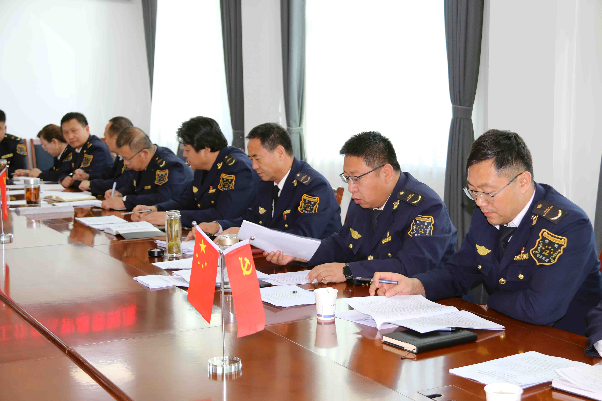
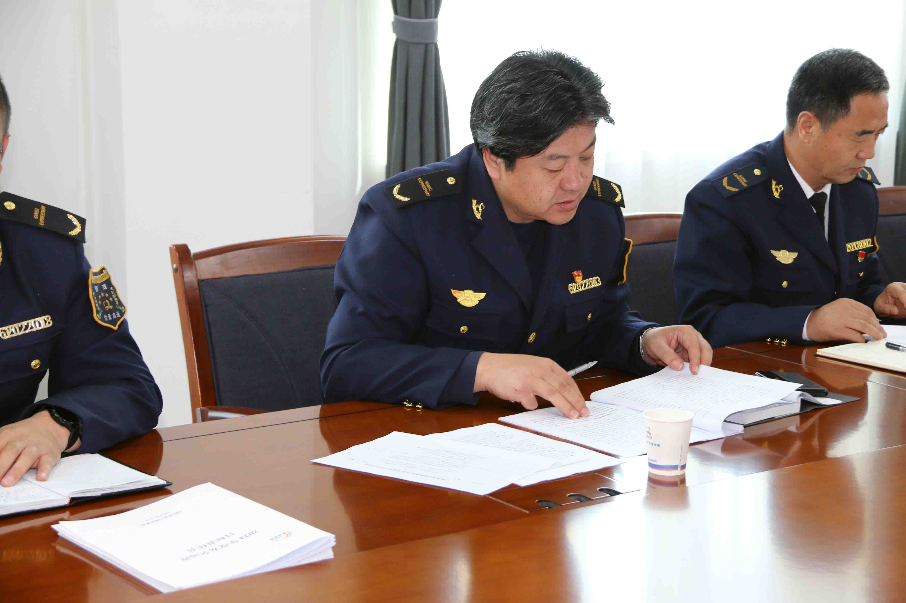
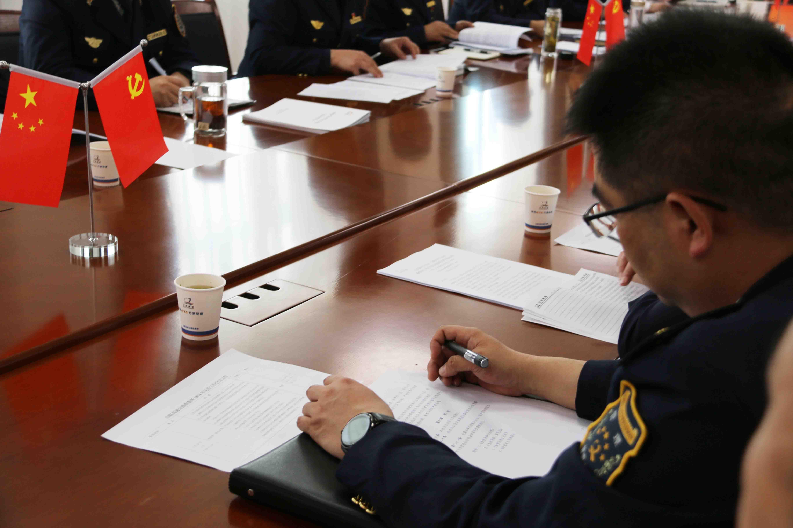

来源：山临所办公室 时间：2024年4月16日
4月16日，山临所党支部召开纪律教育专题学习暨理论学习（扩大）学习会。山临所支委会班子班子成员、收费所及各收费站党小组负责同志、党员代表参与会议。会议由山临所党支部书记郑忠主持。 
本次会议的主要任务是深入贯彻落实习近平总书记关于全面从严治党和加强党的自我革命的重要论述；学习贯彻《中国共产党纪律处分条例》及相关解读、中央办公厅《关于在全党开展党纪学习教育的通知》《甘肃省开展党纪学习教育工作方案》《山临收费所2024年党纪学习教育实施方案》等相关文件进行系统性学习；传达了有关警示案例并集体观看警示教育片。 
在集中交流环节，党支部领导班子成员和各站职工代表围绕“全面加强纪律教育，深入推进党的自我革命，为高速收费运营工作高质量发展提供坚强的政治保障”主题，紧扣学习内容和工作实际，进行交流发言。大家一致表示，要从警示教育中吸取教训，时刻保持头脑清醒，加强纪律法律的日常学习，做到明底线、知敬畏，常以如履薄冰的警惕心，将廉洁精神融入到高速收费运营发展之中。 
最后，郑忠书记提出四点要求：
一、抓实理论学习，筑牢干部队伍拒腐防变的思想防线。 坚持把政治建设摆在首位，持续发扬"八棵树"精神，深学笃行习近平总书记关于党的自我革命的重要思想，不断用党的创新理论凝心铸魂，做到全面学习、全面把握、全面落实，强化规矩意识和纪律意识，严明政治纪律、组织纪律、工作纪律，教育引导全体党员、干部职工树牢从源头上不敢腐、不能腐、不想腐的思想自觉，锤炼过硬思想作风，锻造坚强组织堡垒。
二、提前思考谋划，做好开展集中性纪律教育筹备工作。 习近平总书记在中纪委二十届三中全会上强调，要以学习贯彻新修订的纪律处分条例为契机，在全党开展一次集中性纪律教育。开展集中性纪律教育，是党推进自我革命的重要途径和优良传统，也是党历经百年始终朝气蓬勃的重要经验。各站、机关各部门要提前做好相关思考谋划工作，办公室要牵头对接上级部门，谋划制定工作方案，相关部门要积极配合、扎实推进，教育引导广大党员、干部学纪知纪明纪守纪，自觉把铁的纪律转化为日常习惯和行动准绳。
三、压实各级责任，持续巩固风清气正的良好政治生态。 要充分运用南方局管党治党的历史经验，持之以恒推进全面从严治党，抓实抓细各级责任，努力做到真管真严、敢管敢严、长管长严。领导干部要发挥示范带头作用，讲政治、顾大局、守纪律，层层压实责任；各党小组、工会小组要灵活多样开展学习教育动，发展积极健康的党内政治文化；深入发挥廉洁文化示范基地作用，持续开展廉洁教育宣传活动，营造风清气正的良好政治生态。
四、健全制度机制，稳固收费运营工作高质量发展坚实保障。 要筑牢中央八项规定精神堤坝，健全分层分类作风建设推进机制。要细化全面从严治党考评机制，将年终考核和日常考核相结合，健全可视化可量化评价标准，强化考核结果运用；完善全面从严治党主体责任和监督责任，严格遵守“三不腐”等相关法规，持续推进纠“四风”树新风，全面提升管党治党质效，把纪律和规矩立起来、严起来，执行起来，推动全体党员和干部职工学法知法懂法，严格学纪明纪守纪，让纪律规矩融入日常、化作经常，为收费运营分公司高质量发展提供坚实政治和纪律保障。
©著作权归作者所有,转载或内容合作请联系作者。©网内版权号：